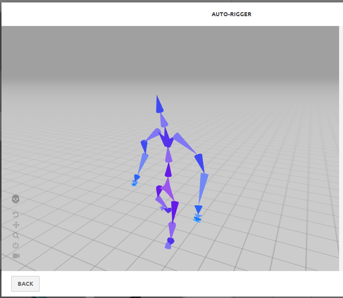

3D Model Design Process
How I built an interactive animated dinosaur in the browser — from zero Three.js knowledge to a live T-Rex with switchable animations.
Purpose
Let the user load a 3D model in the browser and interactively switch between animations using model-viewer as the rendering layer.
Design Process
During my internship at Tesla, one of my coworkers suggested adding 3D modeling to my portfolio website. Balancing work, research, and Texas Guadaloop during the day meant I didn't get to start until Spring Break — but I finally sat down and built it. Here's the story of how it came together.
Overview
Goal: Embed a 3D animated model into a webpage that users can interact with.
- Learn Three.js — understand how it handles animation and UI rendering.
- Find a free 3D model to practice with.
- Embed the model on the website.
- Add animations and interactive controls.

Day 1 — Learning Three.js (March 21, 2023)
- Set up Three.js by installing Node.js and npm.
- Note: Restart VS Code after installing Node.js, or the environment variables won't load.
Challenge: Three.js wasn't rendering anything.
The <script> tag wasn't loading the module correctly.
The viewport showed a black placeholder where the animation should have been.
I adjusted the lighting and camera settings — neither fixed it.
Eventually, I realized other JS files in the page were conflicting with Three.js's module loading.
Day 2 — Switching Approaches (June 12, 2023)
- Discovered
model-viewer— a Google web component purpose-built for 3D in the browser. - Started hunting for a free
.glbfile to test with.

My first attempts didn't go smoothly: the Baymax model I found had too many subfolders and
a complex skin that model-viewer couldn't resolve. I converted a Wall-E .rar file,
then found a .glb version — but it was too large to load. I eventually found a smaller Wall-E file that worked.
The Wall-E was my first working animated 3D model on this website!
Challenges:
model-vieweronly supports.glbfiles.- Baymax's subfolder structure broke the skin rendering.
- The full Wall-E file size exceeded the GitHub push limit.
Day 3 — Let's Animate! (June 13, 2023)

After getting the static model working, I wanted animations. A quick search led me to Mixamo —
an animation tool that lets you rig and animate 3D models. The catch: Mixamo accepts .fbx, .obj, and .zip,
but model-viewer requires .glb. That meant converting between formats at each step.
- Found a pre-animated T-Rex model in
.glbformat — bypassing the Mixamo conversion entirely. - Added animation buttons so users can switch between Bite, Run, and Roar in real time.
- Added a speed slider to control playback rate.

One late-night bug cost me 30 minutes: I'd removed the environment-image property when pushing to GitHub
to reduce file size — and the dinosaur went completely black. Turns out that image was providing the PBR lighting
that made the texture visible. It was 4:04 AM when I finally figured it out.
Challenge: model-viewer can only animate a model if the animation is already baked into the .glb file. Solution: use separate .glb files per animation and swap the src attribute on button click.
Early prototype — Baymax animation test in the browser.
Skills Gained
- 3D model rendering in the browser using
model-viewerand Three.js - Animating and rigging 3D models with Mixamo
- File format pipelines:
.fbx→.obj→.glb - Dynamic DOM manipulation to swap 3D model sources on user interaction
What's Next
- Create and rig my own original 3D model end-to-end.
- Fix the skin texture issue — the PBR material data is present but not rendering correctly in all environments.
- Add more meaningful speed range control for slower/faster animation modes.
Overall Thoughts
I've always loved creating, exploring, and pushing ideas into something real. Getting a suggestion from a coworker at Tesla and turning it into a live interactive model on my website — that's exactly the kind of challenge I gravitate toward. The key lesson from this project: break big ambitions into small, testable steps. Day 1 was just "can I load a model?" Day 2 was "can I load the right model?" Day 3 was "can I make it move?" Each step unlocked the next.

Moral of the story: coffee, patience, and good documentation go a long way at 4 AM.